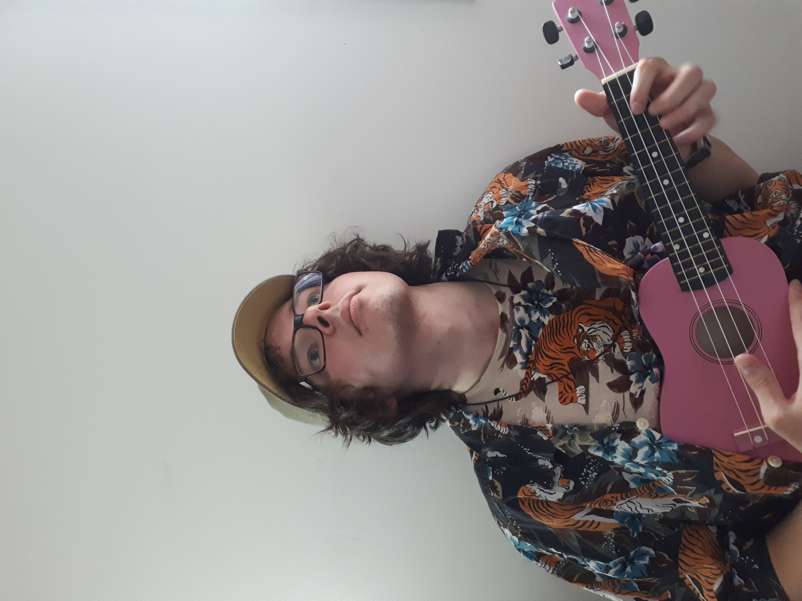
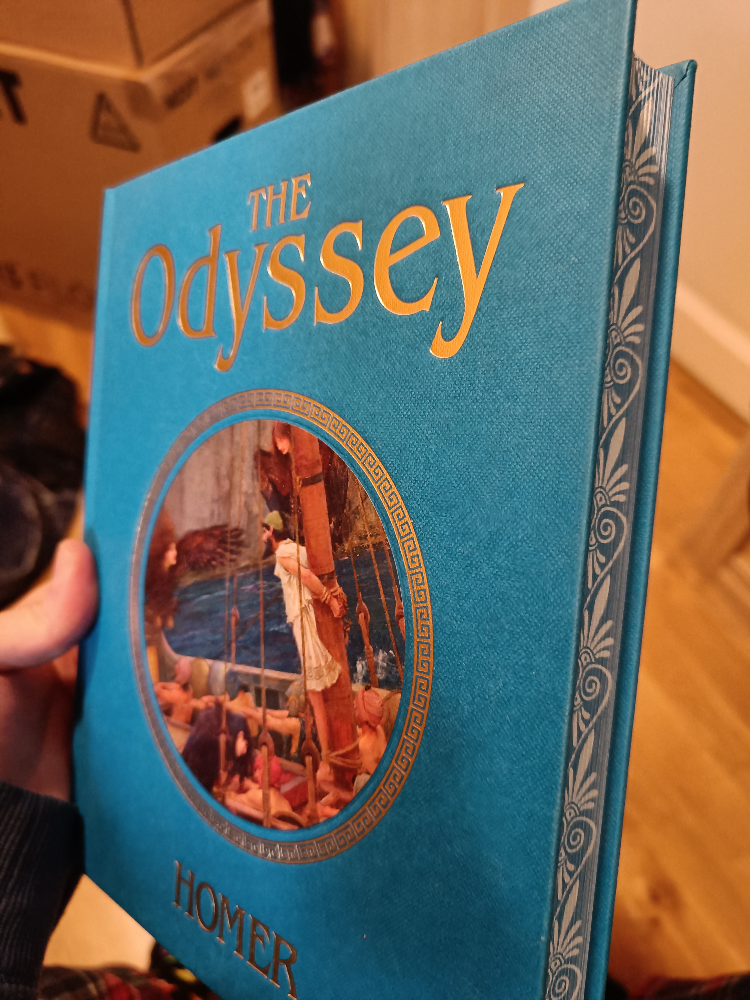
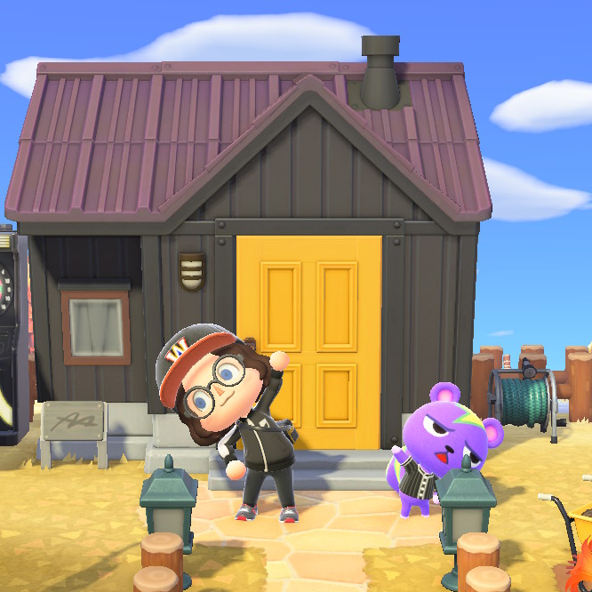
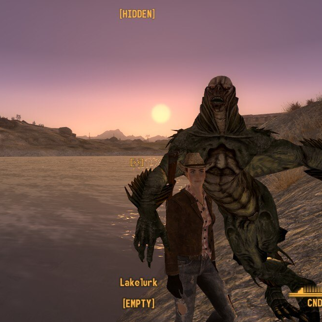
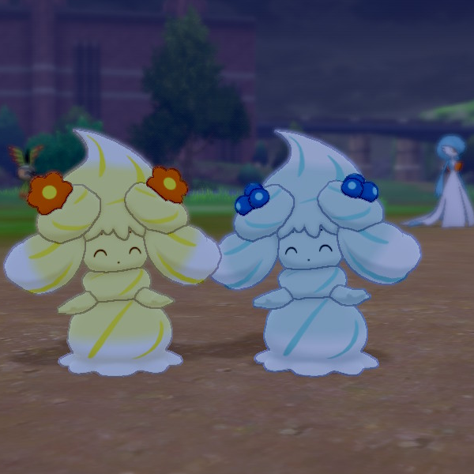
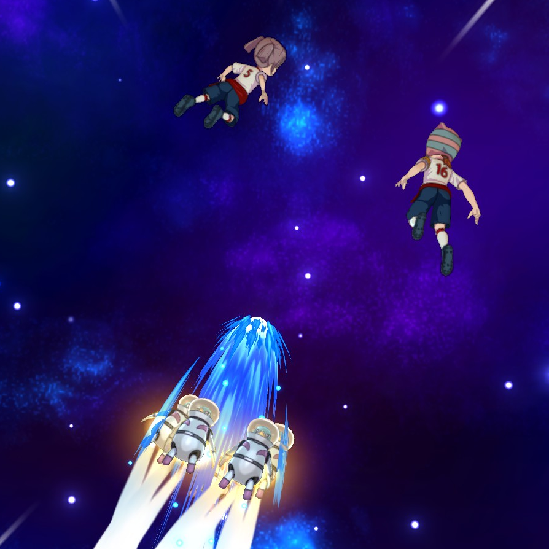
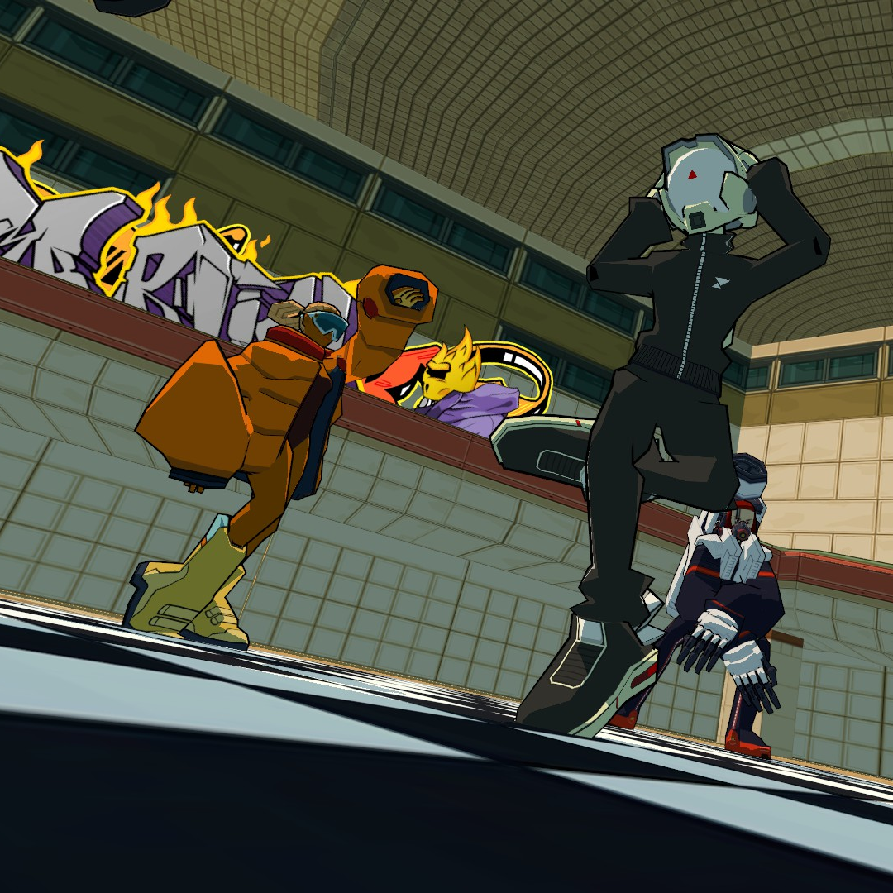
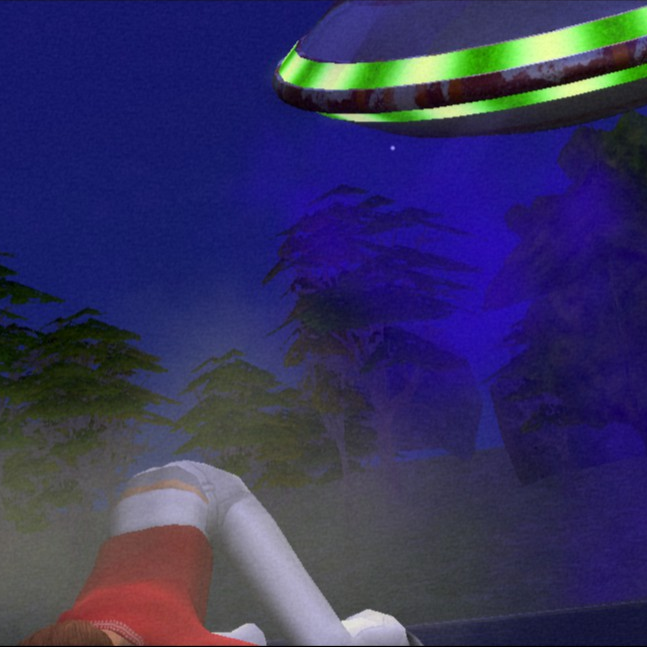
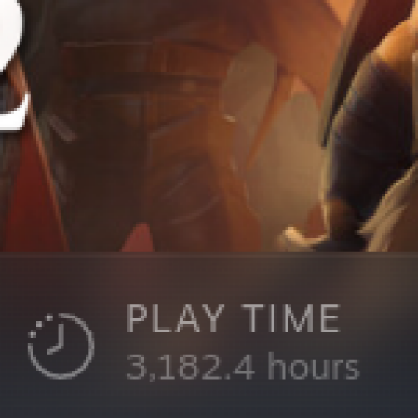
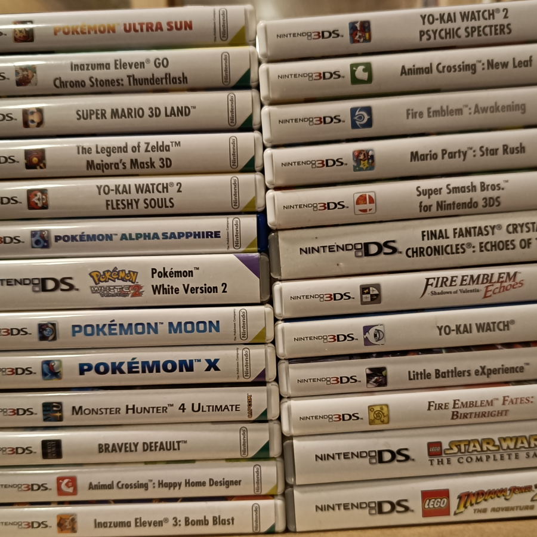

Hello! I'm Jørgen and this is my website that I mess around with a few times a week, when I find the energy and motivation to do so.
I don't really know what sort of stuff I should write in the general intro. I'm an introvert i guess. Never been that good at talking about myself. It's probably easier to write specific sections though. So screw this introductory stuff and let's move on to specifics.
So what are my hobbies? Well, I enjoy video games. I also try to work out a couple times a week(sometimes just once tho, which is bad and I need to be better)
I also kinda ended up liking classic literature by accident. What happened was that I had some business in the city center, and swung by a bookstore on my way home.
The bookstore had a really cool edition of the Oddysey, so I bought it. After a while I thought it would be stupid to have cool books and not read them, so I decided that I have to be into books now out of obligation, haha.

Very cool OdysseyI have a tendency to overthink stuff. That includes the lyrics of songs I listen to. Because of that, I started listening to japanese music. If I cannot understand the lyrics, I can't overthink them. There is a big issue with enjoying small japanese artists, though: finding their music. I sometimes do deep dives on Youtube where I go hunting for old music videos from artists I like.
Another cool music tip is that video game soundtracks often makes good background music for studying. I personally like listening to the LISA soundtrack by Widdly 2 Diddly while working. This might seem weird if you are familiar with what the LISA soundtrack actually sounds like, but trust me on this one, it's weird but it works somehow.
A cool workout tip is that the Sonic the Hedgehog series has a lot of good high-energy songs, especially the vocal ones. The Guilty Gear series also has some very good songs to lift to
Anyway, that's probably enough rambling about music. I've embedded some examples of music I like to the right, check it out!
One of my most played games of all time is Animal Crossing: New Horizons. Something about the relaxed atmosphere, cute animal villagers, and massive customization works really well for me. I still miss the online multiplayer from New Leaf though, but I guess overall New Horizons is the better game thanks to the creative freedom. The only issue I'm running into is that I can't invite cute new animals to my island because my existing residents are too lovable, and there's no more room for houses.

Fallout: New Vegas is one of my favorite games of all time. I can's really put it into words, but wandering the Mojave desert while listening to Radio New Vegas just feels special somehow. I even learned the caravan minigame, which apparently no one does. So here's the strategy: Only play 6s, 8s, 10s, jacks and kings. If you don't have enough, 9s and 7s are fine too. Build tracks with 3 cards or 2 and a king. Kings are also good for bringing opponents past 26. Jacks can be used for offense or to fix damage from enemy kings.


When I first got my own pc, a whole world of pc games opened up to me. And I played none of them. Instead, I downloaded a Gameboy emulator and played Pokémon Emerald. Since then, I've played every pokémon game since white 2 on the ds. While recent games have been more dubious in the quality department, I still enjoy them. Nostalgia is probably doing a lot of heavy ligting there though, so if you're considering picking up the series now, don't bother.

Inazuma Eleven dares to ask the question; "What would FIFA be like if it was a good game?" Well, I merged one of my players with notable historical figure Joan of Arc to make them more powerful. My goalkeeper has the soul of a mammoth, which somehow helps him stop shots. My ace striker is 8 years old and can use the power of outer space to shoot the ball harder. I have a robot and an alien on my team. One of my defenders counters shots by using her teammate as a baseball bat. It's complete anime nonsense in the best possible way.
Bomb Rush Cyberfunk has incredible vibes. The visuals are cool, the grafitti is sick, the gameplay is smooth. And the thing that ties it all together is the music. The music is so damn good, I sometimes had to take dance breaks while playing. Please play this game. If not, please at least listen to the soundtrack. You know what? No. Don't just listen to the soundtrack. Play the game. Do it. The music is enhanced so much by the rest of the game. This is a demand, not a request. Play the game.

The Sims 2 lets you experience the ultimate male fantasy; being able to afford a house, marrying a nice woman, and having children that love you. This game will always have a special place in my heart because of my childhood memories. My best friend had a pc, and we would play the Sims 2 for hours. Later on, when I got my own pc, me and my sister bonded over the Sims 3. I pretty much grew up on the Sims, and I still hate what they've done with the Sims 4.


DO NOT PLAY DOTA 2. It is too good. The dopamine hit you get from pulling of a perfect play will be too much. You will think about all the great games you haven't experienced yet, wonder which one you should play next, and then just boot up DOTA instead. I've never done drugs, but DOTA is probably like drugs or something like that. It's one of the best games I have ever played, don't play it.

I probably have to stop before my entire site becomes videogames. But before that, I'll do a little quickfire round.
The Persona games are fantastic, with my favorite being 4.
I've recently played Elden Ring and it's great.
Katamari Damacy is really cool and the music is mega catchy.
The Fire Emblem games are very fun.
You know what? I'm bringing up Bomb Rush Cyberfunk again. Play it. Do it.